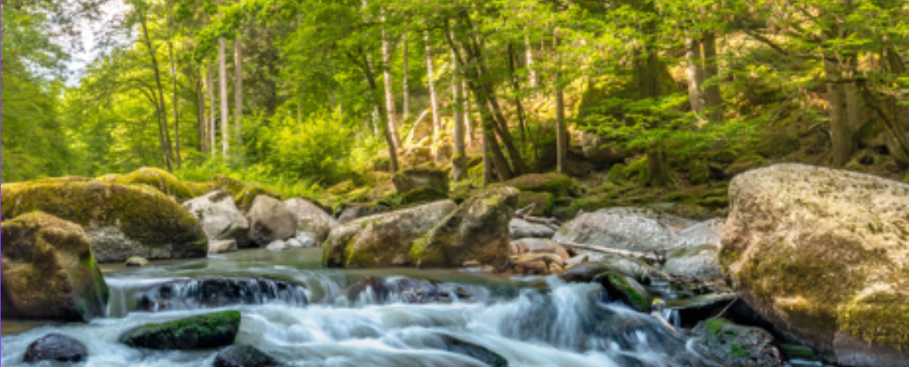

Our story
Focus on making a difference through community conservation efforts that have realistic outcomes for the environment.
We dedicate time to native planting days to renew and rebuild native land, therefore creating a safe passage for our local birds to travel, feed and nest in, away from human interaction.
Predators such as stouts, rats and possums pose as a major threat to native birds. We take action by using and monitoring humane and modern traps in key area and eliminate the predatory population. We provide guided walks for the public and education for children to learn about the practical aspects of conservation.
We believe in education of the youth because they hold the future of New Zealand's forestry and birdlife.
Executive Summary and Organisational Background
Whenua Keepers is an eco-conscious charitable foundation which aims to promote and protect New Zealand’s indigenous wildlife and flora. Whenua translates to both land and placenta in Maori, the native language of New Zealand, which reflects the core belief of many native New Zealanders who regard Papatuanuku or Earth Mother as their spiritual ancestor. Whenua Keepers acknowledge the close relationship between the people and the land, meaning that the health of the former directly affects the latter’s prosperity.
Whenua Keepers’ staff and volunteers strive to conserve, maintain, and rebuild New Zealand’s natural heritage through their relentless work. The main areas of their operations include the protection of indigenous ecosystems, the preservation of New Zealand’s native, unique, and endemic species of animals and plants, and removing the effects of alien predators, pollution, and climate change.
Operational Overview and Sustainability Efforts
Whenua Keepers has the philosophy of operating in a way that reflects New Zealand’s values. Therefore, the foundation uses only eco-friendly practices in every corner of their operations. Their zero-emission transportation system and fleet, cardboard and wool tree guards, solar-powered remote trapping stations, and predator-free trapping lines are only some examples of the company’s sustainability efforts.
Eco-Friendly Operations and Zero Emissions
Whenua Keepers’ staff and volunteers use only battery-powered electric vehicles for their surveying and trapping roles, with solar power as the foundation’s primary energy source. For traversing narrow and rough forest tracks while surveying their trapping lines, the workers can use high-torque bikes to avoid damaging and compacting the soft ground and spreading seeds that may carry Kauri disease. In addition, to access ecologically fragile areas, the staff sometimes has to trek on foot to ensure that no foreign matter such as germs, chemicals, and fuel reaches the wilderness.
In addition to the foundation’s transport and trap monitoring operations, Whenua Keepers ensures that their day-to-day activities and physical operations do not affect the area around them. Their field equipment is made from recycled materials such as cardboard tubes, biodegradable wool mats, and bamboo, and they use tree guards made of paper to avoid plastic waste. The workers use composting toilets that make nutrient-rich compost from human waste as the foundation’s backcountry centres and camps do not have access to flush toilets. Whenua Keepers ensures that their cleaning agents are plant-based and free of harmful chemicals, suitable for greywater systems and the surrounding natural environment.
Native Wildlife Conservation and Management
New Zealand’s native wildlife consists of numerous isolated and vulnerable species, several of which have already gone extinct. Whenua Keepers acknowledges the fragility of New Zealand’s unique and endemic wildlife, which shares its entire ecosystem with only a few animal species, meaning that the destruction of forests and the introduction of foreign species can endanger all of them.
Native Birds Conservation
The native birds such as kiwi, kererū, kākā, tūī, mohua, kākāriki, and bellbirds have survived in New Zealand for centuries. However, their existence is currently threatened by alien species such as stoats, ferrets, rats, possums, and cats. Whenua Keepers manages several large-scale trapping networks to ensure the protection of the local avian species. In addition to their extensive and continuous trapping operations, Whenua Keepers’ staff and volunteers work closely with local iwi and communities, tending to the wild kiwis and monitoring their nests. Using the forest’s natural resources, the workers construct safe passages linking regenerating patches together to help native birds such as the kererū recolonise large areas of New Zealand.
Herpetofauna and Amphibian Conservation.
The foundation participates in numerous wildlife conservation efforts, including protecting and maintaining habitats and building safe grounds for New Zealand’s native reptiles such as tuatara, skinks, and geckos. In addition, Whenua Keepers’ staff helps protect and restore native frog species, including the ancient Archey’s frogs, in their natural mountainous leaf-litter habitats. The workers also ensure that the microhabitats are safe from introduced predators such as rats and mice.
Freshwater Species and Stream Protection.
Many of New Zealand’s indigenous species and wildlife are highly dependent on the country’s freshwaters, such as the Longfin eel, banded kōkopu, and inanga. Whenua Keepers works on several freshwater projects, including constructing eco-friendly fish weirs to aid the Longfin eel’s eighty-year journey to spawn. The Longfin eels’ migration is currently hampered by human-made barriers, making it difficult for the species to reach its natural spawning grounds.
In addition to the Longfin eel’s plight, Whenua Keepers’ experts treat degraded and compacted stream banks by installing fences along the banks and planting native plants along the waterways. The foundation’s workers make sure the silt is trapped in the planting structures to clear the river gravels of debris and help the native fish and macroinvertebrates thrive.
Flora Regeneration and Forest Conservation
Forests play a critical role in New Zealand’s natural ecosystems. Whenua Keepers helps in the restoration and regeneration of New Zealand’s native flora and forests. The foundation’s experts participate in carbon sequestration projects while working with local landowners, council, and iwi to keep native forests, particularly the remnants, for posterity. The native forests that have been fragmented or lost to extreme weather conditions such as landslides are re-established and regenerated by Whenua Keepers. The foundation’s workers also work on removing invasive and unwanted weeds that threaten to destroy New Zealand’s natural forest landscape.
Community Eco-Nursery and Native Tree Growing.
Whenua Keepers conducts several projects to help manage and control pollution in New Zealand. The foundation collaborates with local farmers to plant native species such as cabbage tree and nikau along the banks of the farmer’s ditch to help filter the water before it reaches the main rivers and lakes. In addition, Whenua Keepers’ experts ensure that New Zealand’s wetlands, which act as the kidneys of the ecosystem, are maintained and restored to their natural state.
Mangrove restoration and control projects prevent the wetlands from being overgrown while also helping the ecosystem function correctly. Whenua Keepers works to remove invasive, exotic willows and replaces them with native plant species, including raupō and sedge.
Land Protection from Deforestation
Even though exotic pines are excellent at storing carbon, they do not provide ecological value to New Zealand’s native species. Whenua Keepers encourages long-term protection efforts by planting native trees and collaborating with local councils to manage large-scale land-use changes such as the conversion of native forests to other land uses.
Plastics and Coastal Clean-Up Initiatives
Whenua Keepers’ teams conduct clean-up activities in coastal and marine areas to help manage plastic pollution in the local waters and shores. The foundation’s workers and volunteers also regularly collect litter and plastic materials from New Zealand’s waterways to reduce the amount of garbage dumped in oceans, waterways, and on the shores. In addition to manually removing plastics and rubbish, Whenua Keepers’ expert workers also regularly take samples of the coastal water to determine the areas with the most pollution. The team works with the local authorities to help them understand the pollution patterns and develop policies about plastic waste management.
Indigenous Knowledge and Education
Whenua Keepers acknowledges the importance of community engagement and education regarding environmental protection. The foundation’s staff and volunteers conduct numerous educational initiatives and workshops to raise awareness about the importance of conserving New Zealand’s natural environment. They work with local schools to teach children about native wildlife and involve them in various aspects of the foundation’s activities such as trapping. Whenua Keepers’ team gives school gardens a hand by providing the students with self-contained native plant kits that they can nurture to maturity and transplant into their local community. The foundation’s volunteers also encourage and educate New Zealand’s youth to appreciate the local landscape and become more involved in ecological restoration activities.
The app provides the community with a unique method of contributing to the restoration and protection of New Zealand’s natural environment. They can utilise the application to report any sightings or trapping problems and contribute to the foundation’s wildlife records. Additionally, the app allows the community to stay updated about the foundation’s operations and activities.
The Future of Whenua Keepers
Whenua Keepers has several long-term goals that it hopes to achieve in the next ten years. The foundation aims to plant more than one million trees, of which a considerable percentage should be canopy species. Whenua Keepers also wants to extend their national trapping network to manage alien predators in the region. Lastly, the foundation wants to create one hundred and fifty kilometres of riparian planting to ensure the nation’s freshwaters and natural ecosystems are protected.
Whenua Keepers’ staff and volunteers strive to ensure their operations and facilities are entirely carbon negative. Thus, in the future, the foundation intends to use their renewable energy and battery storage network to provide electricity to the local community.
Conclusion
The future of New Zealand’s wilderness and natural environment is in capable hands. While planting trees or capturing invasive predators is important, whenua Keepers focuses on becoming an organisation that operates in total harmony with nature.
Their eco-friendly operations, native bird conservation, herpetofauna and amphibian conservation, and land restoration efforts showcase their efforts in promoting New Zealand’s eco-heritage. Moreover, the foundation’s close collaboration with local communities, iwi partners, and other environmental organisations ensures that the natural landscape and wilderness of New Zealand are preserved for future generations.
Get involved! Volunteer for our next planting or trapping day.
Donate to help purchase saplings or equipment.
Spread the word and follow us on our journey to come!